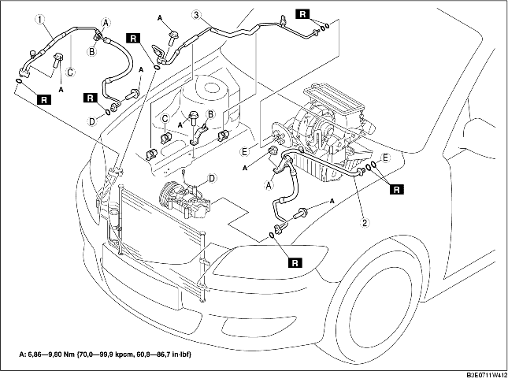

1. Lossa batteriets minuskabel.
2. Tappa ut kylmedlet från systemet. (Se ÅTERFYLLNING AV KYLMEDEL.) (Se LADDNING AV KYLMEDEL.)
3. Demontera reservtanken för servostyrningsvätskan.
4. Demontera reservtanken för kylmedel. (Se DEMONTERING/MONTERING AV KYLARVÄTSKEBEHÅLLAREN.)
5. Demontera gasvajern.
6. Demontera slangfästet för servostyrningsvätskan.
7. Ta bort den undre kåpan.
8. Demontera i den ordning som anges i tabellen. Spill inte kompressorolja.
9. Montera i omvänd ordning mot demonteringen.
10. Funktionstesta kylmedelssystemet. (Se FUNKTIONSKONTROLL AV KYLMEDELSYSTEMET.)

.